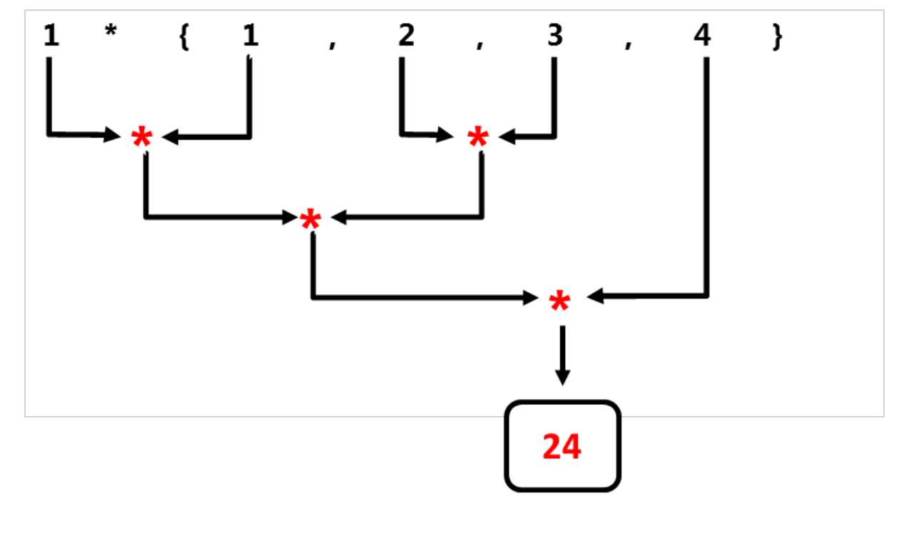

新算法
新算法包含在std命名空间中，std::for_each和std::for_each_n在<algorithm>头文件中声明，其余六种算法在<numeric>头文件中声明。
下面是新算法的概述。
| 算法 | 描述 |
|---|---|
std::for_each | 将一元函数对象应用于引用范围。 |
std::for_each_n | 将一元函数对象应用于引用范围的前n个元素。 |
std::exclusive_scan | 将二元函数对象从左向右应用与引用范围。“排除性”(exclusive)表示第i个输入元素不包含在第i个和内。二元函数对象的第一个参数是之前计算的结果，运算可能以任意顺序进行，并存储中间结果。若二元函数对象不满足结合律，则函数行为不确定。行为与std::partial_sum类似。 |
std::inclusive_scan | 将二元函数对象从左向右应用与引用范围。“包含性”(inclusive)表示第i个输入元素包含于第i个和中。二元函数对象的第一个参数是之前计算的结果，运算可能以任意顺序进行，并存储中间结果。若二元函数对象不满足结合律，则函数行为不确定。行为与std::partial_sum类似 |
std::transform_exclusive_scan | 首先，将一元函数对象应用于引用范围，然后使用std::exclusive_scan。若二元函数对象不满足结合律，则函数行为不确定。 |
std::transform_inclusive_scan | 首先，将一元函数对象应用于引用范围，然后使用std::inclusive_scan。若二元函数对象不满足结合律，则函数行为不确定。 |
std::reduce | 将二元函数对象从左向右应用与引用范围。若二元函数对象不满足交换律或结合律，则函数行为不确定。行为与std::accumulate类似。 |
std::transform_reduce | 首先，将一元函数对象应用于引用范围，然后使用std::reduce。若二元函数对象不满足交换律或结合律，则函数行为不确定。 |
表中的函数描述不大容易理解，若对std::accumulate和std::partial_sum比较了解，那对前缀求和算法应该是非常熟悉。归约算法可以并行使用累加的方式，扫描算法可以并行的使用partial_sum。这就是std::reduce(归约算法)需要满足交换律和结合律的原因。
首先，给出一个算法示例，然后介绍这些函数的功能。示例中，忽略了新的std::for_each算法。与返回一元函数的C++98实现不同，C++17中什么也不返回。std::accumulate从左到右处理元素，而std::reduce可以以任意的顺序处理元素。让我们从使用std::accumulate和std::reduce的小代码段开始，二元函数对象为Lambda函数 [](int a, int b){ return a * b; }。
std::vector<int> v{1, 2, 3, 4};
std::accumulate(v.begin(), v.end(), 1, [](int a, int b){ return a * b; });
std::reduce(std::execution::par, v.begin(), v.end(), 1 ,
[](int a, int b){ return a * b; });
下面两张图显示了std::accumulate和std::reduce的不同策略。
std::accumulate从左开始，依次使用二进制操作符。

与std::accumulate不同，std::reduce以一种不确定的方式使用二元操作符。

结合律允许std::reduce算法计算任意邻接元素对。因为元素顺序可交换，所以中间结果可以按任意顺序计算。
当前可用的算法实现
展示代码之前，必须做个说明。据我所知，本书更新的时候(2018年9月)，并没有完全符合标准的并行STL实现。MSVC 17.8也只是增加了对大约30种算法的支持。
MSVC 17.8中的并行算法
std::adjacent_differencestd::adjacent_findstd::all_ofstd::any_ofstd::countstd::count_ifstd::equalstd::exclusive_scanstd::findstd::find_endstd::find_first_ofstd::find_ifstd::for_eachstd::for_each_nstd::inclusive_scanstd::mismatchstd::none_ofstd::reducestd::removestd::remove_ifstd::searchstd::search_nstd::sortstd::stable_sortstd::transformstd::transform_exclusive_scanstd::transform_inclusive_scanstd::transform_reduce这里使用HPX实现功能，并生成输出，HPX (High-Performance ParalleX)是一种可用于任何规模的并行和分布式应用程序的通用C++运行时系统框架。HPX已经在其的一个名称空间中实现了所有并行STL。
为了完整性，这里是并行STL的部分实现连接:
新算法示例代码
// newAlgorithm.cpp
#include <algorithm>
#include <execution>
#include <numeric>
#include <iostream>
#include <string>
#include <vector>
int main() {
std::cout << std::endl;
// for_each_n
std::vector<int> intVec{ 1,2,3,4,5,6,7,8,9,10 };
std::for_each_n(std::execution::par,
intVec.begin(), 5, [](int& arg) {arg *= arg; });
std::cout << "for_each_n: ";
for (auto v : intVec)std::cout << v << " ";
std::cout << "\n\n";
// exclusive_scan and inclusive_scan
std::vector<int> resVec{ 1,2,3,4,5,6,7,8,9 };
std::exclusive_scan(std::execution::par,
resVec.begin(), resVec.end(), resVec.begin(), 1,
[](int fir, int sec) {return fir * sec; });
std::cout << "exclusive_scan: ";
for (auto v : resVec)std::cout << v << " ";
std::cout << std::endl;
std::vector<int> resVec2{ 1,2,3,4,5,6,7,8,9 };
std::inclusive_scan(std::execution::par,
resVec2.begin(), resVec2.end(), resVec2.begin(),
[](int fir, int sec) {return fir * sec; });
std::cout << "inclusive_scan: ";
for (auto v : resVec2)std::cout << v << " ";
std::cout << "\n\n";
// transform_exclusive_scan and transform_inclusive_scan
std::vector<int> resVec3{ 1,2,3,4,5,6,7,8,9 };
std::vector<int> resVec4(resVec3.size());
std::transform_exclusive_scan(std::execution::par,
resVec3.begin(), resVec3.end(),
resVec4.begin(), 0,
[](int fir, int sec) {return fir + sec; },
[](int arg) {return arg *= arg; });
std::cout << "transform_exclusive_scan: ";
for (auto v : resVec4)std::cout << v << " ";
std::cout << std::endl;
std::vector<std::string> strVec{ "Only", "for","testing", "purpose" };
std::vector<int> resVec5(strVec.size());
std::transform_inclusive_scan(std::execution::par,
strVec.begin(), strVec.end(),
resVec5.begin(), 0,
[](auto fir, auto sec) {return fir + sec; },
[](auto s) {return s.length(); });
std::cout << "transform_inclusive_scan: ";
for (auto v : resVec5) std::cout << v << " ";
std::cout << "\n\n";
// reduce and transform_reduce
std::vector<std::string> strVec2{ "Only", "for", "testing", "purpose" };
std::string res = std::reduce(std::execution::par,
strVec2.begin() + 1, strVec2.end(), strVec2[0],
[](auto fir, auto sec) {return fir + ":" + sec; });
std::cout << "reduce: " << res << std::endl;
std::size_t res7 = std::transform_reduce(std::execution::par,
strVec2.begin(), strVec2.end(),
[](std::string s) {return s.length(); },
0, [](std::size_t a, std::size_t b) {return a + b; });
std::cout << "transform_reduce: " << res7 << std::endl;
std::cout << std::endl;
}
程序在第17行使用了std::vector<int>，在第58行使用了std::vectorstd::string。
第18行中的std::for_each_n将向量的前n个元素映射为2次幂。std::exclusive_scan(第27行)和std::inclusive_scan(第37行)非常相似，两者都对元素应用二元操作。区别在于std::exclusive_scan排除了每个迭代中的最后一个元素。
第48行中的std::transform_exclusive_scan比较难理解。第一步中，使用Lambda函数[](int arg){return arg *= arg;}，对resVec3.begin()到resVec3.end()范围内的每个元素，进行2次幂操作。第二步，对保存中间结果的向量(resVec4)使用二元运算[](int fir, int sec){return fir + sec;}。这样，使用0作为元素求和的初始值，结果放在resVec4.begin()中。
第61行中的std::transform_inclusive_scan类似，而这里操作的是元素的长度。
这里的std::reduce应该比较容易理解，程序中在输入向量的每两个元素之间放置“:”字符，因为结果字符串不应该以“:”字符开头，所以从第二个元素(strVec2.begin() + 1)开始，并使用strVec2[0]作为初始值。
transform_reduce与map_reduce
关于第80行的
std::transform_reduce，我还想多补充两句。首先，C++算法的转换算法，在其他语言中通常称为映射(map)。因此，也可以称std::transform_reduce为std::map_reduce。std::transform_reduce的后端实现，使用的是C++中著名的并行MapReduce算法。相应地，std::transform_reduce在某个范围内使用一元函数(([](std::string s){ return s.length();}))，并将结果归约为一个输出值：[](std::size_t a, std::size_t b){return a+b;}。
下面是程序的输出。

更多的重载
归约和扫描算法的C++实现有很多重载版本。最简版本中，可以在没有二元函数对象和初始元素的情况下使用。如果不使用二元函数对象，则默认将加法作为二元操作符。如果没有指定初始元素，则初始元素取决于使用的算法:
std::inclusive_scan和std::transform_inclusive_scan算法 : 选用第一个元素。std::reduce和std::transform_reduce算法 : 相应类型的构造值std::iterator_traits<InputIt>::value_type{}。
接下来，从函数的角度再来看看这些新算法。
功能性继承
时间宝贵，长话短说：所有的C++新算法在纯函数语言Haskell中都有对应。
std::for_each_n对应map。std::exclusive_scan和std::inclusive_scan分别对应scanl和scanl1。std::transform_exclusive_scan和std::transform_inclusive_scan分别对应map与scan1和scan2的组合。std::reduce对应foldl或foldl1。std::transform_reduce对应于foldl或foldl1与map的组合。
展示Haskell的实际效果之前，先了解下功能上的差异。
- map将一个函数应用于列表。
- foldl和foldl1将一个二元操作符应用于列表，并将该列表的值归约成一个。与foldl1不同，foldl需要一个初始值。
- scanl和scanl1与foldl和foldl1类似，但可以获取计算时的中间结果列表。
- foldl , foldl1 , scanl和scanl1从左向右处理元素。
让我们看一下这些Haskell函数，下面是Haskell解释器的命令行界面。

(1)和(2)定义了一个整数列表和一个字符串列表。(3)中将Lambda函数(\a -> a * a)应用到整数列表中。(4)和(5)比较复杂，表达式(4)以1作为乘法的中间元素，乘以(*)所有整数对。表达式(5)做相应的加法运算。理解(6)、(7)和(9)是比较具有挑战性的，必须从右到左读。scanl1(+).map(\a->length)(7)是一个函数组合，点(.)左右是两个函数。第一个函数将每个元素映射为自身长度，第二个函数将长度列表累加。(9)与(7)相似，不同之处在于foldl生成一个值，并需要一个初始值。到这，表达式(8)就好理解了，它连续地用“:”字符将两个字符串连接起来。